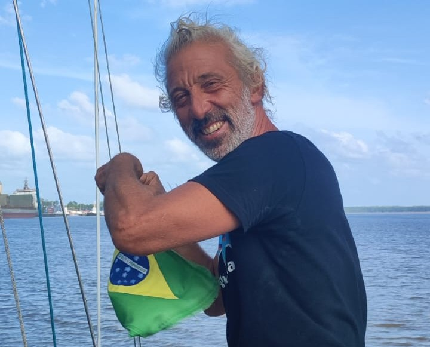

Lo skipper
Cartografo e zoologo di professione, navigatore per diletto. Flessibile, capace di navigare in autonomia, socievole, tollerante, discreto e poco esigente. Patente nautica a vela oltre le 12 MN. Ha gestito per alcuni anni un Jeanneau 519 battente bandiera australiana. Più di 50.000 miglia di navigazione, di cui oltre 40.000 come skipper. Traversata più lunga: Darwin-Isola della Riunione (FR)-Durban (6.000 MN). A memoria d'uomo, mai avuto mal di mare. Ama viaggiare con qualsiasi mezzo, dai piedi al kayak. Parla italiano, inglese, francese e comprende spagnolo e portoghese. Nato nel 1963. Non fumatore.
Impressioni dei miei compagni di viaggio.
Curriculum professionale.
Mappa delle navigazioni.
Barche
Ha navigato su ( skipper):
- Cuthbertson&Cassian (C&C) custom 66'
- Lagoon 42
- Azuree 40 Full carbon protoype
- Amel Super Maramu 2000
- Hanse 445
- Swan 42
- X41
- Class 950
- Custom 42
- Delta 84 Brazzoni
- Kirie Feeling 326
- Alpa 34
- Edel 545
- Vaurien di legno
- Sipla FJ
- Traditional East African dhow
- Tartane - La Flaneuse
- Bavaria:
- Dufour:
- Bénéteau:
- Jeanneau:
Impressioni di viaggio
La più grande avventura della mia vita
R B, Canarie
J'ai bien conscience de la chance d'avoir découvert la mer avec toi
Più faccio esperienza, più mi rendo conto che è stato proprio figo navigare con te
Une aventure incroyable !!
J’ai passé 1 mois sur FSM avec Paolo et Giovanni. Nous sommes partis de Dakar pour arriver au Brésil. C’était exceptionnel.
Paolo est un capitaine très expérimenté qui sait tout gérer sur son bateau et surtout qui sait transmettre son savoir. Naviguer avec lui a été l’occasion d’apprendre la voile.
Au delà de ça, Paolo est quelqu’un de passionnant avec qui les conversations sont intéressantes.
Une chose est sûr je reviendrai à bord !!
Bon vent pour la suite Paolo !
Grazie mille
Arrivederci
Tuo Amico Alex
It is my pleasure to recommend Paolo Cavallini as skipper (or crew) for your boating needs.
I recently engaged Paolo for volunteer crew on my vessel “MARRICAR” for the period 23rd to 28th October 2018. In that time we made passage from Port Roses, Girona to Bizerte, Tunisia and then on to Alghero, Sardegna.
Paolo is a great skipper with a wealth of experience. But it wasn’t just the skippering that I enjoyed, it was his passion for sailing (and life) and the great chats we had along the way, even in the early hours.
Whenever he was at the helm I felt relaxed and safe. Knowing he can handle the worst Mother Nature can throw, and we definitely got close to some of those.
Paolo dealt with on board problems as they arose and was able to trouble shoot and fix issues “on the go” even in heavy weather.
I recommend Paolo Cavallini as a sailor (and more importantly a person) without reservation.
I only hope we can remain friends from over the globe.
Richard, SY Marricar - The letter of recommendation
Non andare troppo in giro per il mondo nei prossimi anni. Oltre che un bravo Marinaio (che per quanto mi riguarda è il migliore sostantivo associabile a chi va per mare), sei una persona di grande cultura, ammirevole semplicità (anche questo vuole essere un complimento, a scanso di equivocci) e piacevolissima conversazione. Ci terrei ad una crociera assieme nel dodecanneso.
Andrea Valentinis
È passato un mese da quando sono sbarcata da FSM in Sicilia. Spesso, gli amici più curiosi, mi chiedono di raccontare di questa esperienza che mi ha portata in giro per il Mediterraneo per ben tre mesi!
Non trovo ancora le parole giuste che possano minimamente trasmettere cosa mi ha lasciato questa avventura...
Per questo voglio condividere un emozione/pensiero scritta in navigazione in rotta Malta quando anche il "non navigare" è stato magia.
Navighiamo fermi in un mare in movimento
Oggi ha deciso di non soffiare.
Intorno a noi solo un mare d'olio. Chissà perché le raffiche sembrano sempre poco più in là. Eppure possono non arrivare per ore.
La corrente si muove a un nodo verso nord.
Scorriamo con essa come una piuma poggiata sull'acqua. Come tutto il resto delle cose che galleggiano in superfice. Bottiglie di plastica, polistirolo, pacchi che contengono chissà quale tesoro, meduse, ramoscelli. Siamo il nulla, insieme a loro.
Naufraghi per scelta, è come essere in vacanza in primavera. Il sole ci riscalda la pelle in questo spazio meravigliosamente indefinito.
Se ascolti bene quel silenzio puoi sentirci ciò che vuoi. Belare, un clacson, voci.
Adesso capisco chi da di matto dopo troppo tempo in mare.
I rumori sono amplificati.
Tutto è meraviglia, anche il frastuono di un aereo che viaggia lontanissimo da noi.
Il tempo è dilatato, dall'alba al tramonto, dalle nuvole al sereno. Non ci sono orari, il giorno non ha un nome.
La barca non è più solo un mezzo di trasporto, non è solo una casa, non lo è mai stata. Ancor più oggi è una culla, ci tiene con sé, protegge. È inevitabilmente quello che più conta: la vita.
Grazie Paolo
G B
I have just spent 2 amazing weeks with Paolo on his boat going round the Sporades.
He is an excellent sailor a very good instructor and incredibly patient!
He is also a very interesting man and we had some wonderful in depth talks which I found fascinating
All in all it was an awesome and unforgettable time and I shall return!
Sarah Goode
Fabuleux Sailing sul Mare. Automne 2022. Des Cyclades-Syros à Alghero-Sardaigne.
Naviguer sur FSM avec Paolo fut une découverte de la mer de façon privilégiée.
Capitaine attentif et pédagogue, sachant transmettre sa confiance naturellement, et navigateur expérimenté, assuré, réactif : dans des conditions de mer variées, se sentir en sécurité.
Homme respecteux, flexible et curieux, avec qui il est possible d'alterner entre de stimulants partages de connaissances, des discussions animées (e l'Italia è proprio un teatro !!), et trouver la bonne distance et dose de silence pour partager ces quelques metres carrés.
En vivant sur la piccola barca, retrouver en pleine mer comme en montagne l'essentiel d'un refuge et la chaleur d'un chalet. Small is beautiful. En connaitre le moindre detail et en prendre soin au quotidien.
Et bien sur, la voile, veramente ! Près d'un mois de navigation : le plaisir de jouer avec les conditions de vent, configuration de voiles, choix de trajectoire, temps de repos ou d'optimisation... sur 1.000 miles, je crois moins de 10 heures de moteur...
Le plus difficile sans doute : debarquer 😉.
De belles navigations à celles et ceux qui iront.
Lucie
I recently sailed with Paolo from Sardinia to Spain. He is an easy going person with a lot of experience and patience when it comes to sharing his knowledge about boats or sailing. No matter how many questions you ask, he always explains them with great details, patience and a smiling face. He is also supportive in letting you take charge of doing things on the boat if he feels you are safe and capable of handling and maneuvering the boat safely around marinas or out at sea. I have learnt a lot from him over the days and can gladly recommend sailing with him if you want to build your sailing experience and knowledge.
Gaurav Patel
I have just arrived home after my holiday to Greece with my two friends, her dad and Paolo and I had the best time ever. Paolo took us to the best places that only the locals or people who own a boat knew about. Every place Paolo took us was my favourite, all the beautiful beaches reminded me of home. I am a huge ABBA fan and Paolo gave me the best experience possible to fulfil my dreams. Not only did he take us to the best places he kept us safe in the choppy sea and helped exiting the boat much easier. More importantly Paolo felt like a family memeber that you have known for a long time, he fit perfectly well in the group he has a kind and caring soul and the best humour and stories that I will miss deeply. I will never forget this trip and I hope to see him soon!
Charlotte Coy [the youngest crew!]
I absolutely loved Paolo and his company on board. As a 16 year old girl bringing my two best friends to come sailing around Greece in the holidays, the holiday was more of an adventure and it was non stop fun. Paolo bringing us to the best and private islands around Greece which I didn’t know existed. He was such a kind and caring soul and always happy to do whatever. His sailing made us all feel safe and excited to what the day was going to bring. It was really sad leaving Paolo but definitely want to see him and sail again in the future. I 100% recommend. Thank you Paolo.
Charlotte B.
“non cerco un findanzato o marito, non sono giovane, bella e neppure magra ma amo il mare e la vela” questo era il mio messaggio di contatto alla ricerca di un equipaggio in un post di questa pagina. ho poi scoperto che tale premessa non era necessaria, paolo e’ un uomo serio, simpatico e realmente esperto ed appassionato di vela. Con la sua barca perfettamente armata, funzionante e mantenuta (sembra scontato ma non è cosi) riesce ad usare le vele come sistema prioritario di propulsione con una naturalezza da farlo sembrare facile. Colto, pacato, paziente, educato e anche quando non gli sei di alcun aiuto, ti coivolge e fa sentire a tuo agio come se fossimo vecchi amici benvoluti a bordo.
Finalmente dopo anni di esperienze che mi avevano fatto pensare di non reimbarcarmi più, ho rivissuto una reale esperienza di vela con un armatore con cui è possibile sia avere belle conversazioni e grande coinvolgimento che momenti in cui, nonostante l’ambiente limitato, sono riuscita ad avere i miei spazi oltre a a cene in navigazione nei colori del tramonto o aperitivi con i vicini nelle rade.
Grazie Paolo.
Chiara Guerri
Naviguer entre les orages et le beau temps
J’ai embarqué sur FSM à la Marina di Ragusa, sud Sicile. Les courses en main rejointe par Lucie l’autre co-équipière qui naviguait déjà depuis une semaine et qui allait être mon acolyte sur le bateau, nous rejoignons Paolo et commençons par inaugurer cette rencontre et ce futur périple par une glace délicieuse. Le feeling passe très bien et la suite du voyage se passe dans une ambiance de co-réflexion pour les choix. Je prends mes marques sur le bateau et la confiance s’installe rapidement. Nous faisons les quarts de nuit, prenons la barre, tentons même quelques virements de bord sans lui quelques-uns ratés, c’est pas grave on recommence, on apprend. Les navigations étaient vraiment agréable (on s’entend ça ne se rapporte pas à la houle qui nous secoue ;) ), Paolo est un skipper serein qui connaît son bateau et met l’ensemble de l’équipe en sécurité et confiance surtout. Alors malgré que le bateau gîte à 35 degré, qu’il pleut, on est bien. Ce que j’ai trouvé particulièrement bien c’est le mix entre navigation intensive et mouillage chill avec baignade ou visite, de pouvoir profiter des lieux où on passe et à la fois de faire beaucoup de voile.
Je ne peux que vous recommander Paolo, il est bienveillant, accueillant, intéressant et à les connaissances de la mer. Magnifique rencontre.
Bonne suite sur ton voyage!
Sophie
Ringrazio sinceramente Paolo per la bellissima esperienza di navigazione, da Corinto a Creta, passando per Milos, bombardati da un Burian eccezionalmente freddo che ha imbiancato tutto l'Egeo, come mai prima.
Paolo mi ha accolto sin da subito con simpatia, complicità e professionalità. Sempre di buon umore, curioso, competente, capace di argomentare i più svariati temi, con un suo originale approccio darwiniano che mi ha colpito e stimolato.
Sicuro, fermo e tranquillo anche nelle situazioni di navigazione più intense (un forza 8 notturno impossibile da dimenticare, al largo di Balos), e soprattutto abile a trasmettere tale placidità all'equipaggio, motivandolo e facendolo crescere giorno dopo giorno.
Esperienza istruttiva sia dal punto di vista marinaro che umano, senza tralasciare i giorni in cantiere che mi sono serviti per conoscere bene la barca ed il suo capitano.
Un ringraziamento va anche ovviamente al terzo membro del viaggio/avventura/esperienza/parentesi.., Séraphim, altra persona squisita ed intelligente, che ha chiuso un cerchio, o meglio un triangolo;)
Come si dice in questi casi, 5 stelline e raccomando a tutti;)
Spero di incrociare ancora FSM & co., possibilmente al lasco e con delle belle onde, lunghe e bianche, al giardinetto.
καλός αέρας
Joshua
J'ai eu la chance de naviguer une dizaine de jours sur FSM, de Corinthe jusqu'à Paleochora (Crète) en passant par Milos. C'était la fin du mois de janvier 2022, le vent venu de Sibérie apportait la neige sur les Cyclades et soufflait fort avec des pointes à 46 nœuds. Ce fut une expérience extraordinaire.
Ayant récupéré un Aloa 29 avec deux amis, sans avoir une connaissance très approfondie de la navigation, mon idée était d'apprendre sur le tas avec des navigateurs expérimentés. En répondant à l'annonce de Paolo sur la bourse aux équipiers, j'avais eu l'intuition de tomber sur quelque chose de spécial. C'était bien au-delà de mes espérances.
L'aventure humaine n'a pas été en reste. Très pédagogue et patient, Paolo m'a énormément appris. Son calme et sa sérénité dans toutes les situations resterons pour moi comme un exemple. Les conversations enrichissantes, la belle énergie et la simplicité des échanges. La joie de rencontrer également Joshua, entraîneur en voile légère sur le Lago di Garda, et qui m'a également beaucoup appris. L'amour de la cuisine que nous avons partagé et les recettes élaborées par force 7. Les rencontres fortuites dans les ports avec ce type d'humains assez particuliers qui parcourent la Méditerranée en hiver avec leurs cortèges de projets un peu fous. Comme l'a dit un autre Paolo, il n'y a pas de hasard, seulement des rendez-vous.
Séraphim
Con Paolo ho avuto la mia prima vera esperienza di navigaizone, un misto di avventura nello scoprire nuovi posti bellissimi e perfezionare la mia passione, la vela.
Lui è molto esperto, inoltre una persona estremamente piacevole, cordiale e colta, sempre pronto a rispondere a qualunque mia domanda e disponibile a spiegare e trasmettere la sua passione a chiunque.
La barca è stupenda e comoda (Grazie mitica FSM) e fatico particolarmente a ricordare una vacanza così perfetta, sopratutto per l'equipaggio che si è formato.
Spero di ritornare a bordo con lui prima possibile. Grazie ancora.
Alessio Cardinale
Ciao Paolo, volevamo ringraziarti per la magnifica veleggiata fra Skiathos, Skopelos, il canale dell’Eubea fino ad Atene. Sono state due settimane entusiasmanti di vento e mare, ma quello che più abbiamo apprezzato è la positività che ti caratterizza personalmente, un carattere plasmato da anni di esperienze per mare, ma anche dalla tua istrionica simpatia che riservi agli ospiti della tua splendida barca che affronta il mare sempre in condizioni di estrema sicurezza date le tue capacità di andare per mare in qualsiasi situazione. Crediamo di essere stati abbastanza collaborativi e, soprattutto, di aver trascorso questo periodo in modo leggero senza problemi, anzi un approccio come ci conoscessimo da anni, merito del tuo carattere sempre disponibile.
Speriamo che la compagnia possa ripetersi anche in altri contesti, ringraziandoti ancora. Con affetto
filippo e roberto
Navigare con Paolo su FSM significa essere accolti in un luogo magico dove fare esperienza di vela e di relazione umana. L'intelligenza, la simpatia, l'adattabilità di Paolo favoriscono sempre atmosfere serene sia in navigazione che nei momenti sulla terra ferma. Fuori dalle rotte più usuali e quanto più a contatto con le realtà locali è stato un bellissimo, e a me affine, modo di vivere la mia prima felice esperienza in barca a vela!
Maureen
I spent 12 days with Paolo on his boat OVNI 32 between Thessaloniki and the Sporades (Greece). A rewarding sailing experience because Paolo is very pedagogue, calm and he likes to pass on his knowledge. Paolo is a very respectful, curious person who has a great capacity for adaptation. We had a great time discussing various current affairs, social topics etc.
Thank you again for these magical moments!
Baptiste Piveteux
Pendant 3 semaines de navigation et plus de 400 miles, nous avons pris beaucoup de plaisir à faire de la voile, à nous arrêter dans des mouillages sublimes et à profiter des nombreux plaisirs simples que nous offre la mer égée en été. Au delà du tourisme, ce fût aussi une rencontre avec Paolo... Il ne vous laissera pas indifférent !
Vincent Bonnet
Une semaine parfaite dans les cyclades.
Alternance de navigation et de moments de repos, de longues discussions et de silences, avec le plaisir et le respect comme leitmotiv. Paolo est effectivement dispo à tout assumer au niveau navigation si nécessaire mais aussi à partager toutes ses connaissances si souhaité. Superbe expérience de navigation, de plaisir et d'humanité.
Bérengère DENIS
A la fin février, j’ai participé au convoyage d’un Lagoon 42 avec Paolo comme skipper. Ce fut pour moi une aventure humaine très agréable, Paolo étant une personne cultivée, avenante, et respectueuse. Dans notre périple, nous avons dû affronter du gros temps, surtout en doublant le cap Finistère, et dans ce lieu mythique pour les marins, j’ai pu apprécier les excellentes qualités de navigateur de Paolo. Malgré un vent frôlant les 50 noeuds et des creux de 6 à 7 metres, Paolo est toujours resté très calme, prenant les bonnes décisions au bon moment, et surtout, il m’a transmis sa sérénité , ce qui m’ a permis d’apprécier ce voyage à sa juste valeur. J’ai beaucoup appris, et je recommanderai Paolo à tous mes camarades equipiers ainsi qu’à mes connaissances propriétaires de voiliers pour d’éventuels convoyages ou croisières.
Paolo est la personne idéale sur un voilier, je le dis très haut.
Daniel
"Ajo', prendi un aereo e raggiungimi ad Alghero ché si torna insieme a Pisa con FSM"
Ecco, così è nata l'idea di accompagnare Paolo in questo trasferimento invernale (non ha detto proprio 'ajo' ma quasi).
Mi sono così trovato a condividere con Paolo questa avventura (per me certamente dato che, pur essendo sardo, ho i 'piedi fangosi') sulla sua barca che per quattro giorni è stata la mia casa e il mio mondo.
Quattro giorni straordinari durante i quali chi ha voglia di mettersi in ascolto potrà sentire molto di sé e del mondo.
Nonostante io non sia riuscito ad imparare neanche il 'nodo parlato', Paolo mi ha gentilmente accompagnato con la discrezione, la gentilezza e la disponibilità che lo contraddistinguono, ad assumere un atteggiamento di completa dedizione alla navigazione, imparando a rispettare ed apprezzare i tempi non più nostri ma del vento e del mare.
FSM e Paolo, un tutt'uno al quale guardare con rispetto e ammirazione; mettetevi nelle loro mani e vedrete che vi riconcilierete con voi stessi e col mondo.
Nota tecnica: il frigorifero di bordo è perfetto e le birrette sono sempre gelate.
Stefano, FSM
J’ai eu le plaisir de partager près de 2000 nm en double avec Paolo qui est un type très intéressant, surtout un bon marin avec qui j’ai pu partager mon plaisir des longues navigations.
[Note] J’ai aussi appris a cuisiner la pasta al ragù.
Je recommande évidemment Paolo pour toute navigation… cool et cruising ou fast sailing.
Fred, S/V ScentStone (Amel Super Maramu 2000) -
Bundaberg to Darwin, Australia
Affrontare una navigazione oceanica non è facile, specialmente se non si conosce l’equipaggio. Questo mi è successo nella mia ultima e recente veleggiata di oltre 2000 miglia. In barca, gli spazi sono ridotti ed il carattere di una persona emerge, prima o poi, con atteggiamenti che ognuno percepisce in modo molto amplificato. Per questo è importante avere vicino persone equilibrate, positive, disponibili e, se possibile, anche preparate. Questo l’ho compreso negli anni, con l’esperienza. Non conoscevo Paolo, ma sin dal primo momento che l’ho incontrato, ho pensato che di lui mi potevo fidare. In realtà, non è solo questione di fiducia, ma deve esserci molto di più:quando sali in barca, poni la tua vita nelle mani degli altri membri dell’equipaggio e fondamentalmente di chi ne ha il comando. La prima impressione che ho avuto incontrando Paolo, non è mai stata smentita, anzi, giornalmente ho potuto constatare che non mi ero sbagliata! Paolo è una persona eclettica, uno sportivo per passione, che ragiona come solo uno scienziato puo’ fare. È stato sempre accorto e disponibile, risolvendo ogni tipo di problema con tempestività e competenza. Cosa molto importante, a mio avviso, in ogni momento, era sempre sorridente. Allo stesso tempo imponeva regole e disciplina con estremo rigore, senza che ciò potesse apparire una imposizione. Nei momenti di relax riusciva a scherzare colloquiando simultaneamente in bilingue, creando un collante tra i membri dell’equipaggio eterogenei. Per tutti questi motivi, grazie a Paolo, ho potuto assaporare la navigazione oceanica, con estrema tranquillità, anche se i venti sferzavano a 50 nodi, le correnti erano talmente forti da bloccare anche il pilota automatico, il tempo era pessimo ed il mio mal di mare iniziale, avrebbero potuto trasformare la traversata in qualcosa di molto negativo. Sono sbarcata con la consapevolezza di aver vissuto la più bella veleggiata della mia vita.
Fortunati coloro che potranno condividere con Paolo anche solo qualche miglio marino.
Grazie Paolo.
Anna Francesca
J'ai navigué avec Paolo de Portimao à Mohammedia et au retour vent debout avec panne de pilote.
C'est plus qu'un équipier, c'est un skipper compétent, charmant, toujours de bonne humeur et sa présence sur un bateau est une félicité quotidienne. Il parle plusieurs langues, anglais, espagnol, portugais et français. Je suis propriétaire d'un Bavaria 33, j'ai 65 ans, comme patron de sociétés, je connais les hommes et Paolo. Je le recommande surtout pour ces qualités de marins et aussi humaines.
Henri, S/V Grenadines - Portugal-Moroc
Navigare da Alghero a Chania è stata la mia prima esperienza in barca a vela ed è stata un'esperienza che non dimenticherò mai! Ho viaggiato con il mio compagno Gabriele e con il nostro favoloso skipper, Paolo.
Paolo non è stato solo un ottimo comandante ma anche un amico con cui parlare di qualsiasi argomento, dall'economia all'arte! Si è instaurato un bel feeling fin dal primo giorno e, grazie alla sua competenza e pazienza, ho imparato molte cose sulla navigazione, sulla barca a vela e ovviamente sul vento. Il viaggio è stato reso indimenticabile dai tramonti, dal mare, dai delfini e dalle tartarughe! Non credo mi capiterà di nuovo di nuotare con una tartaruga e per questo, assieme a tutto quello che ho vissuto durante questa esperienza, voglio ringraziare il nostro amico e capitano. Grazie Paolo!
Laura
Paolo Cavallini è stato mio comandante e amico in una lunga traversata no-stop nel mediterraneo, da Alghero in Sardegna a Creta. Quasi mille Miglia, la mia prima esperienza in barca a vela ma Paolo è riuscito a farmi sentire sempre al sicuro, mi ha dato fiducia e si è sempre comportato in modo gentile e sincero. Non potevo aspettarmi uno Skipper migliore, una persona capace di eccezionale adattabilità, sensibile e paziente ma risoluto nelle decisioni importanti. Ha dimostrato di conoscere e rispettare il mare ogni giorno e mi ha dato l' opportunità di crescere e imparare davvero tanto sulla navigazione.
Vorrei ringraziare lo Skipper Paolo Cavallini per questa meravigliosa esperienza ma sopratutto per avermi trasmesso la Sua sconfinata passione per la Vela e il mare, Grazie.
Gabriele
Una settimana in barca a vela nelle isole cicladi.......un sogno!
Poi mettici uno skipper capace, simpatico, capce di infondere tranquillità anche nei momenti critici...... e condisci il tutto con un clima perfetto e una 'ciurma' giusta......Cosa si puo' volere di piu' dalla vita? Evidentemente fare piu' di una settimana!!!
Ricorderò sempre questa esperienza 'perfetta' e ricorderò anche un co-skipper speciale (il figlio del comandante) Ulisse, che con la sua vitalità e simpatia ha reso la settimana ancora piu' piacevole .....senza dimenticare le sue ricette vegane che consiglio a tutti!!!
Cinzia
Les iles Cyclades à la voile.
6 jours de rêve avec des escales magiques et variées en mode 50% navigation et 50% relax. Le tout avec un skipper aguerri et constamment attentif à la sécurité et au bien-être des passagers.
Welcome in paradise !
Alain
Vacanza di sogno nelle isole greche. Itinerari scelti dal nostro commandante espertissimo di vela, di carattere molto gradevole e in grado di intervenire in tante lingue. Vacanza che consiglierei e ripeterei.
Heddy
Distesi, in mezzo alla turbolenza del mare, trasportati sul palmo di una mano
Sailing with you was exactly this: feeling free and happy :)
Prima esperienza in barca, sicuramente da rifare per 2 motivi: (1.) poesie in mare aperto, tutt’uno con l’universo, cambio di prospettiva relazionale; (2.) muscoli super rassodati (e tante more…!). Unica avvertenza per i neofiti: mai inserire visite che vi interessano molto in una breve vacanza in barca; quasi sicuramente il tempo cambierà i vostri programmi!
Stanco ma molto felice
Non avevo nessuna idea di come fosse, mi sono imbarcata con un’idea vacanziera ma ben presto l’abilità , la bravura e la disponibilità ad insegnarmi di tutti quanti i miei compagni a bordo hanno fatto si che imparassi e mi rendessi utile alla vita sulla barca. Gran bella esperienza, visto dal mare baie stupende, approdata in posti meravigliosi, goduto di strepitosi tramonti e ammirato suggestive albe. Il vento che spinge le vele è una magia, il gorgoglio dell’acqua è una dolce musica. Voglio tornarci !
Navigare insieme
Vela sostenibile
Credo che la vela sia un meraviglioso modo per vivere in modo ecologicamente più sostenibile, e mi impegno perché la mia navigazione lo sia il più possibile:
- FSM è in alluminio, un materiale altamente riciclabile, al contrario delle varie resine
- uso il motore il meno possibile, solo nelle manovre (e neppure sempre) e quando le condizioni siano altrimenti pericolose o danneggino eccessivamente l'attrezzatura; consumo in media meno di un litro di gasolio al giorno
- uso l'energia solare per ricaricare le batterie e scaldare l'acqua
- consumo il meno possibile da tutti i punti di vista (acqua, energia, prodotti chimici, vegetarian & vegan friendly ecc.) riducendo l'attrezzatura al minimo necessario per garantire la sicurezza; credo che ridurre l'impatto sull'ambiente sia più una questione di riduzione che di complesse soluzioni tecnologiche (fin quando possibile, i piedi sono meglio della Tesla)